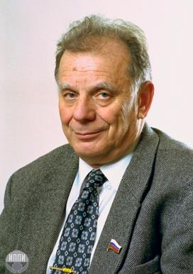

|
|---|
Жорес Иванович Алфёров(15 марта 1930, Витебск, Белорусская ССР, СССР — 1 марта 2019, Санкт-Петербург, Россия)Советский и российский учёный-физик, политический деятель.Лауреат Нобелевской премии по физике (2000 год, за разработку полупроводниковых гетероструктур и создание быстрых опто- и микроэлектронных компонентов). Вице-президент РАН с 1991 до 2017 год. Председатель Президиума Санкт-Петербургского научного центра РАН. Академик АН СССР (1979; член-корреспондент 1972). Заслуженный энергетик Российской Федерации (1996). Лауреат Ленинской премии (1972), Государственной премии СССР (1984), Государственной премии Российской Федерации (2001). Орден Ленина (1986). Полный кавалер ордена «За заслуги перед Отечеством». Иностранный член Национальной академии наук США (1990) и Национальной инженерной академии США (1990), Корейской академии наук и технологий (1995), Китайской академии наук, Польской академии наук (1988), член Академий наук Республики Беларусь (1995), Молдавии (2000), Азербайджана (2004), почётный член Национальной академии наук Армении (2011). Основоположник научного мореплавания и физической химии; заложил основы науки о стекле. С 1953 года работал в Физико-техническом институте имени А. Ф. Иоффе, где был младшим научным сотрудником в лаборатории В. М. Тучкевича и принимал участие в разработке первых советских транзисторов и силовых германиевых приборов. Кандидат технических наук (1961). Свой первый патент в области гетеропереходов Алфёров получил в марте 1963 года. Гетеропереходы он исследовал вместе с Рудольфом Казариновым. Учёные добились того, что заработал полупроводниковый лазер, который теперь применяется в оптико-волоконной связи и в проигрывателях компакт-дисков. В 1969 году идеи открытия гетеропереходов начали применяться в солнечных космических батареях на МКС и в сфере лазерной глазной хирургии. В 1976 году сотрудники лаборатории контактных явлений ЛФТИ под руководством Алфёрова получили премию Ленинского комсомола за получение и исследование широкозонных твёрдых растворов соединений и создание на их основе эффективных инжекционных источников излучения в видимой части спектра. В декабре 2000 года Алфёров удостоен Нобелевской премии в области физики в сфере физики полупроводников совместно с учёными Г.Кремером и Д.Килби (США) в создании основ современных IT-технологий. Автор более 500 научных работ, трёх монографий и 50 изобретений. |
Меню |
Фотография |
©2021 |
|---|